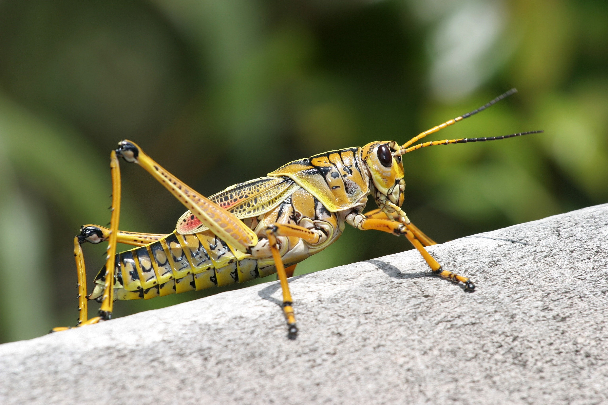
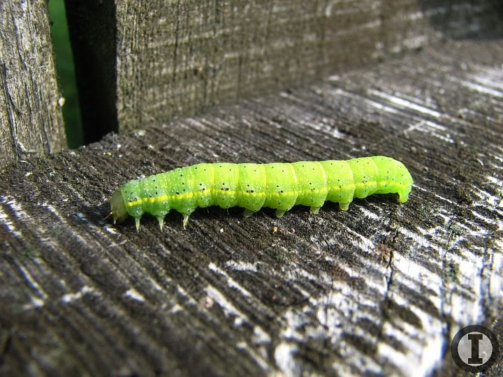
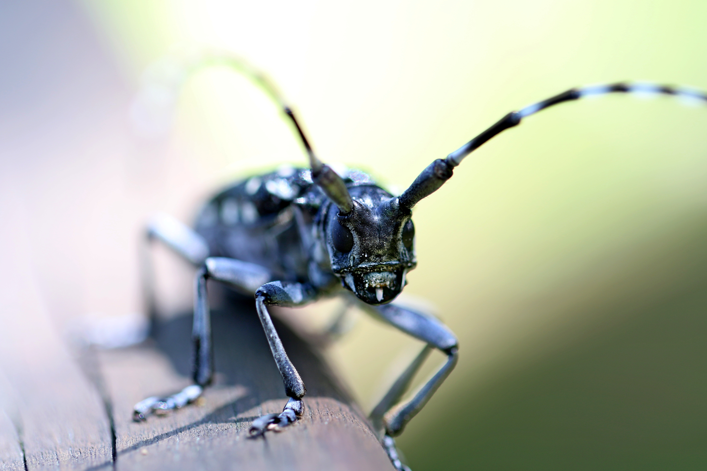

Prva od slika

Druga od slika

Neki plavi kukacOvaj ima dobre rogove, stvarno vrlo kulCrvendaćJako jako lijep kukacJedan mali kukac, također sedma slikaVeoma ružan kukacSigurno najljepši kukac, uvjerljivi pobjednikZadnji kukac, također vrlo lijep